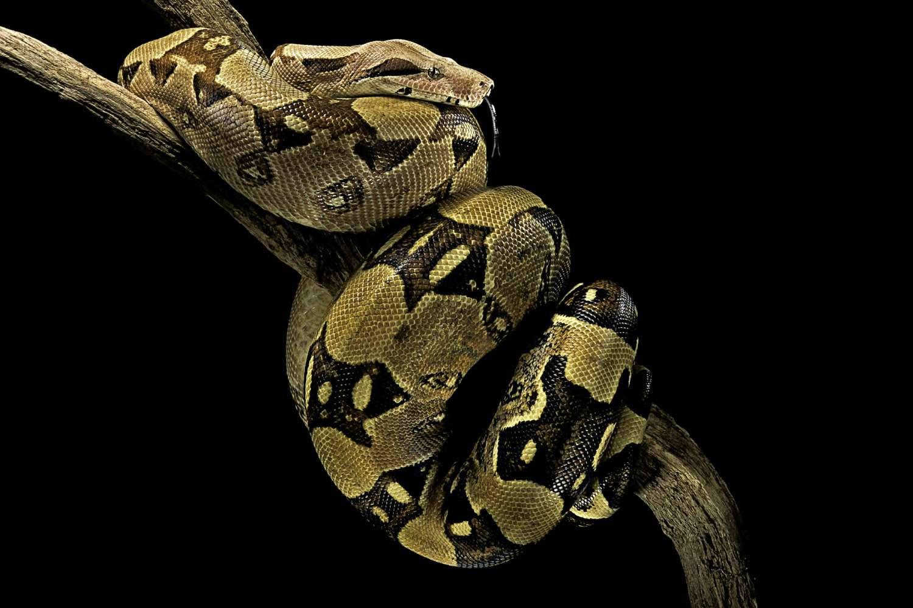
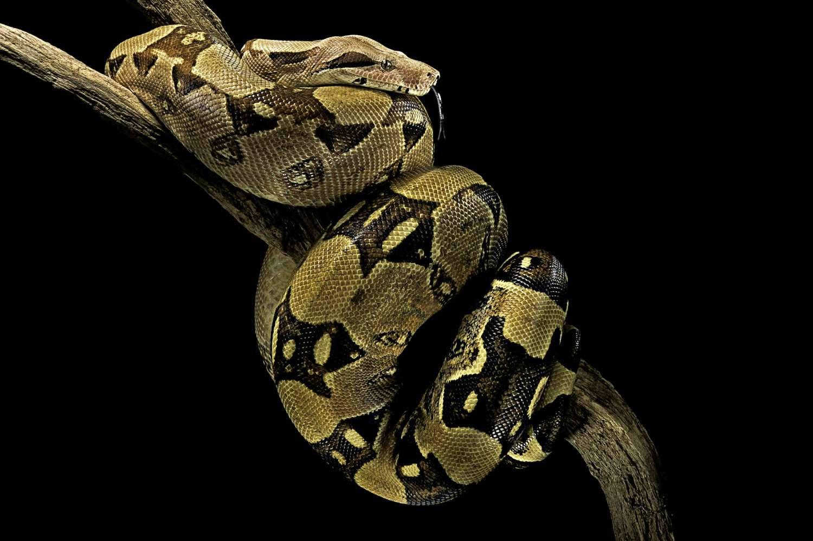

La Boa constrictor, como se conoce en el ámbito científico, es una serpiente no venenosa. Su cuerpo es robusto y llega a medir en promedio unos 4 m de longitud. Su piel presenta escamas de colores rosa o beige con bandas cruzadas de color más oscuro. En México se distribuye en ambas costas: en el Pacífico, desde el norte de Sonora y centro de Tamaulipas; al centro, en los estados de Durango, Morelos, Puebla y San Luis Potosí, y en el Golfo hasta la Península de Yucatán. Las boas son animales carnívoros que cazan por la noche. Sus hábitos alimenticios contribuyen a mantener a algunas poblaciones animales bajo control, prestando así un servicio ambiental muy importante, sobre todo en lo que toca a la agricultura.
Dieta
- Lagartijas
- Aves pequeñas
- Tlacuaches
- Murciélagos
- Ratas
- Ardillas
Depredadores
- Ser humano
- Águilas
- Halcones
- Cocodrilos
- Caimanes
 
